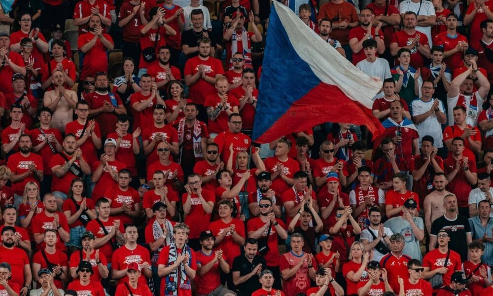
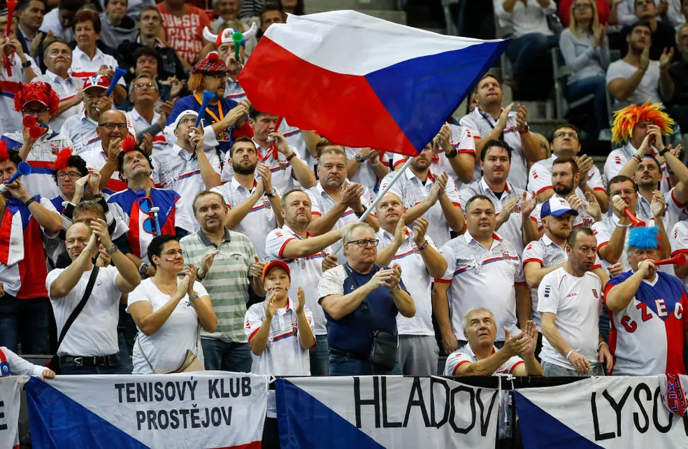

República Tcheca
República Tcheca
A República Tcheca chega para a Copa do Mundo da FIFA™ vivendo um momento de pura catarse e redenção histórica. Após amargar um doloroso jejum de duas décadas longe dos holofotes do maior palco do futebol mundial — já que sua última participação havia sido na Alemanha, em 2006 —, o país finalmente carimbou seu passaporte para o torneio de 2026. Esta será apenas a segunda vez que a nação disputa o Mundial desde a dissolução da antiga Tchecoslováquia, transformando a classificação em um feito monumental para toda uma geração de torcedores que nunca tinha visto sua seleção brilhar na era moderna da competição.
Seleção
HISTÓRIA
A melhor Copa
do Mundo
República Tcheca
a era de ouro remete ao ano de 1962 (sob a bandeira da Tchecoslováquia). Aquela campanha no Chile foi uma aula de disciplina, talento e resiliência. Liderados pelo genial Josef Masopust, os tchecos desbancaram potências, encararam o lendário Brasil de Garrincha na fase de grupos e na grande final, e conquistaram um vice-campeonato mundial que até hoje é lembrado como o ponto mais alto de sua rica trajetória esportiva.
1962
Se o critério for o resultado puro e o nível do futebol apresentado, a Copa de 1962 foi o ápice. Com uma equipe extremamente disciplinada taticamente e liderada pelo craque Josef Masopust (que ganhou a Bola de Ouro da revista France Football naquele mesmo ano), a seleção surpreendeu o mundo.
2006
Como nação independente (após a dissolução pacífica do país em 1993), a República Tcheca teve imensa dificuldade para carimbar sua vaga no torneio, conseguindo se classificar pela primeira vez apenas em 2006. Embora o torneio tenha terminado de forma melancólica com a eliminação na primeira fase, a estreia daquela Copa foi o momento mais brilhante do país na era moderna


Momentos inesquecíveis
01
A edição do República Tcheca 1986 representa uma lembrança especial para a torcida, não apenas pelo calor humano que vinha das arquibancadas, mas também pelo futebol apresentado sob o comando de Bora Milutinovic.
02
Em 1986, o República Tcheca voltou a sediar a Copa do Mundo e repetiu a sua melhor campanha da história, chegando novamente às quartas de final e terminando o torneio de forma invicta no tempo regulamentar. O país assumiu a organização às pressas após a Colômbia desistir por motivos financeiros.
03
Após um longo e doloroso hiato de exatamente 20 anos longe dos gramados do maior torneio do planeta, a República Tcheca garantiu de forma dramática a sua classificação para a Copa do Mundo de 2026 após vencer a Dinamarca na repescagem europeia.
04
Em 12 de junho de 2006, os tchecos, que tinham uma geração fantástica com Pavel Nedvěd, Petr Čech, Jan Koller e Milan Baroš, deram um show e golearam os Estados Unidos por 3 a 0.
Detalhes
culturais do país